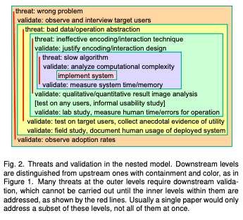

Final project
Due by 6:00 PM on Monday, December 9, 2019
Objective:
Develop a Shiny app based on any data-related topic. 
Dataset:
This is up to your group. You may use a dataset from the design contest (the same or a different data set) or select your own. Warning, don’t overthink selecting your dataset.
In one week, make a decision on your data set by November 14, 2019 (send me by email). This is the most important step to start with.
Want ideas? Check out these resources.
Design process:
Very similar to design contest, answer the following questions in your design process:
What are the data and tasks?
What can/must be done using data analysis?
What needs to be done interactively?
How to best support the user in conducting the tasks?
What’s the analysis and interaction flow?
What needs to be visualized and how to best visualize it?
However unlike the design contest, the expectation for this system will be a shiny-enabled app (e.g., could be a shiny app, shinydashboard, flexdashboard with shiny enabled).
You will have three deliverables:
Shiny app
Your app. You can submit it as:
Ideal (but not required): a GitHub repo with the shinyapps.io link on the README for the deployed app. Could include a RStudio cloud project too.
Alternative: a RStudio cloud project link (submit to me via email or on your slides).
Worst case: upload a zip folder on canvas where your shiny app can be fully reproduced! (i.e., self-contained folder that includes any data).
You do not need to deploy your app on shinyapps given some great packages may have issues deploying; however, it is highly recommended to deploy to shinyapps.io.
Presentation
Prepare a 7-8 minutes presentation to introduce your dataset, scenario, design process, and your system.
Highly recommended hands-on demo for your app. 
If you used the same data set as the design contest, you can sum up your presentation in 1-2 slides (remind dataset, scenario, and basic design). Then go into a hands-on scenario (e.g., what if scenario) to demonstrate the value of your app.
The presentations will be given on Dec 9 during our final exam period.
Teams will present in opposite order of Design Contest.
Final Report
Prepare a final report to outline your Shiny app and its relevant objective (task).
This will be written in RMarkdown. See any of the document formats (html, doc, even tufte style). You’re welcome to explore Bookdown if you want to be adventurous (not required). You can create either an html-based RMarkdown file that you publish (e.g., https://rpubs.com) or upload on Canvas a pdf document.
The report should have six sections:
- Introduction: Domain problem characterization
- What is the problem you want to solve?
- Data/operation abstraction design:
- How did you prepare your data?
- Encoding/Interaction design:
- Did you use the most effective data visualization design?
- Algorithmic design:
- How does your systems work holistically (e.g., not slugglish)?
- User evaluation:
- How would you test your system?
- Future work
What could you do next?
- Appendix (optional)This is for any exploratory work that didn’t make it into your app or process. You can highlight packages you may have tried.

To understand sections 1-4, you will need to read Tamara Munzner’s “A Nested Model for Visualization Design and Validation”.
Section 5 is an outline for how you could (hypothetically) evaluate whether youFor this part, be sure to read Mazza’s chapter on evaluating interfaces
Length: Each section can be about 2-5 paragraphs. Figures are always helpful. Maybe a table or two. When in doubt, put things in the appendix to keep the report concise.
Grading:
The instructor grades the design after your presentation according to the following criteria:
- Presentation:
Novelty of your scenario (12.5%): Explanation of your scenario, task, and why your app will enable users to better complete the task. Provide the scenario and (ideally) a live demo (e.g., on your local machine or RStudio cloud account).
Presentation quality (12.5%): organized presentation that provide a clear overview of the app and surrounding details. Don’t make it too overwhelming. Focus on one scenario and explain how your app can answer that question. Also, was it fun? (gifs are highly recommended)
- Reproducibility & Code:
Reproducible code (12.5%): Code is standalone and can be fully reproduced. Better (more organized) code will receive higher points than code that is not organized. GitHub highly recommended.This is an excellent opportunity for you to start your code portfolio. Follow Jenny Bryan’s excellent introduction to Git with R tutorial.
Or you can create an RStudio cloud project and share with me the link (much easier).Deployed app or RStudio Cloud Project (12.5%): App is either deployed on shinyapps.io OR you provide an RStudio Cloud project link. shinyapps.io are preferred but RStudio Cloud can be helpful if you may have issues deploying.Even better, take this opportunity to create your own blogdown blog using Allison Hill’s great introduction to blogdown and then write your first post to introduce your app.
- Shiny App:
App quality (12.5%): Usability of the app. Not necessarily most complex – too much interaction can have costs – but the one that aids in your task. Great design processes will enable strong apps.
Algorithmic evaluation(i.e., runtime, scale, optimization)
(12.5%): How you implement your design. Does your app respond well. Points will be removed if the interactions are too complex (too slow) and hurt the users’ ability to perform the task. Can this app be scaled if you were provided more data?
- Final Report (10 points):
Report contents (12.5%): Report is organized, with clear explanations, limited spelling, punctuation, appropriate tables and figures, and explanation for how to reproduce the results (run the code).
Shiny app evaluation(12.5%): describe how you would evaluate your app. Base this on your task and how you would devise an experiment to validate that your shiny app improves your task. This can be what you review for your presentation.
Bonus Points: Shiny App Awards
Based on class vote, we’ll award extra credit for the team voted: 
1. Best app (+10% extra credit)
- Team with the most total votes.
Spring 2019 Winner: Nicholas Occhipinti, Karyn Cook, and Ziyin Liu for their Shiny app to explore multiple data sets related to opioid crisis to better understand and obtain insight on the opioid epidemic in the United States.
https://nocchipi.shinyapps.io/dsba_5122_final_project/
2. Best documented (+5% extra credit):
- Reproducible code on GitHub, deployed app, RStudio cloud project, link to your final report, and maybe even create your own blog and write a blog postA must read blog post for aspiring data scientists by David Robinson. David’s actual quote at the end: “if you’re early in your career as a data scientist and you start a data-related blog, tweet me a link at
@droband I’ll tweet about your first post”. Take him up on the offer (and use #dsba5122)!
to summarize your project.
Spring 2019 Winner: Kabita Paul, Elif Demir, and Anjali Bapat who designed a shinydashboard app to explore Olympics performance over the last century by country and participant.
https://github.com/anjbapat/Olympics.github.io/
3. Best scenario design / most practical (+5% extra credit):
- Tool that best fits a problem. This shiny app is most ready for production (e.g.,
shinyloadtestto show the given task can scale to X users.)
Spring 2019 Winner: Abe Sadikov for SMARTSIGHT, a market-basket analysis of Instacart products to identify patterns in purchase behaviors.
https://github.com/Ibrokhimsadikov/Final-Projecct
4. Human-centered machine learning (+5% extra credit)
- Best combination of using machine learning, social networks, text analysis, or statistical model with your visualization. Help the user understand the model to enable an even better human-in-the-loop decision.
Spring 2019 Winner: Balavigneswaran Kuppusamy, Minglan Ye, and Jiamin (Jenni) Lei who designed a shinydashboard to explore High School friend relationships in an (anonymized) friendship network with key centrality measures to determine the most popular friends in the network.
https://github.com/bala-kuppusamy/visual-design
5. Most creative (+5% extra credit)
- Use flexible like D3 (via
r2d3), altair, or newer htmlwidgets to develop creative ways to visualize the data.
Spring 2019 Winner: Evan Canfield, Chandra Bhumireddy, and Rommel Badilla who created a shiny app to explore EIA data for electricity generation in the Southeast US from 2001 through 2017